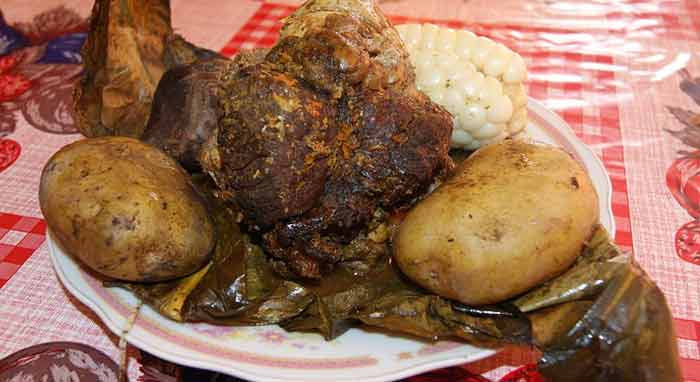

¡ Pachamanca: tradición, sabor y unión familiar en un solo plato!

Ingredientes
- 1 kg de carne de cerdo
- 1 kg de carne de pollo
- 1 kg de carne de res
- 500 g de habas frescas
- 1 kg de papas andinas
- 500 g de camote
- 250 g de humitas o tamales
- 250 g de queso fresco
- Choclos tiernos en trozos
- Hojas de plátano o pancas de maíz
- Ají panca, ají amarillo, comino, sal y pimienta
- Hierbas andinas (chincho, huacatay, hierba buena)
Preparación
- Adoba las carnes con ají panca, ají amarillo, comino, sal y hierbas andinas. Deja reposar por unas horas.
- Calienta piedras grandes en una fogata hasta que estén al rojo vivo.
- Coloca las piedras en un hoyo en la tierra o en una olla grande, cubriéndolas con hojas de plátano.
- Acomoda las carnes sobre las hojas y cubre con más piedras calientes.
- Añade papas, camotes, habas, choclos, humitas y queso.
- Vuelve a cubrir con hojas de plátano y finalmente con tierra o mantas gruesas para conservar el calor.
- Deja cocinar entre 1 a 2 horas.
- Destapa con cuidado y sirve caliente, acompañado de salsas andinas.
Video de Preparación